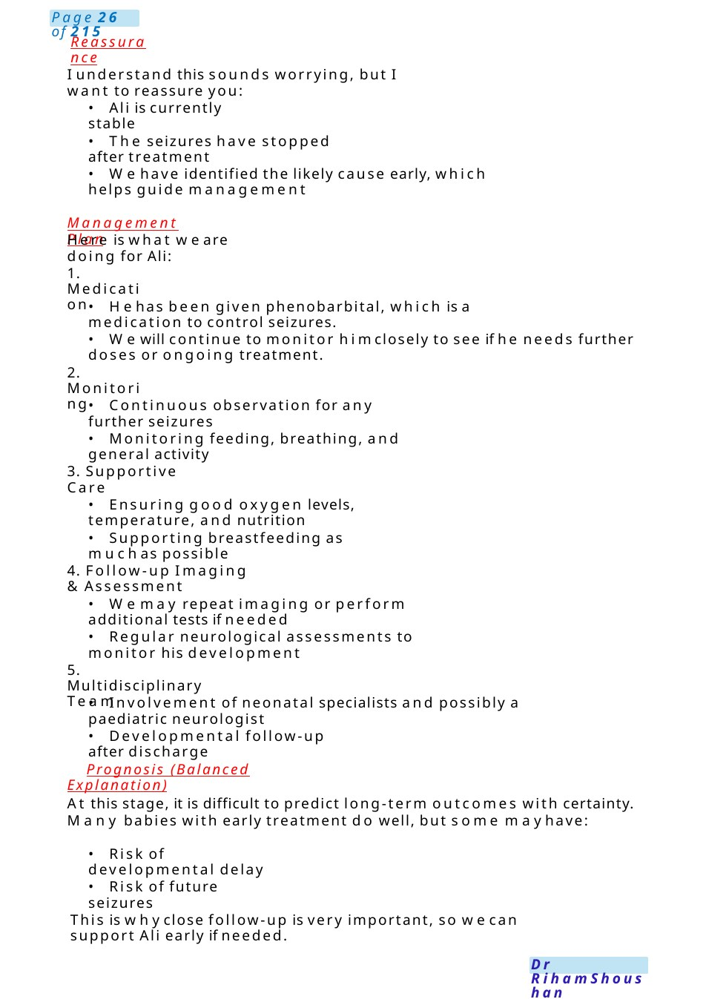
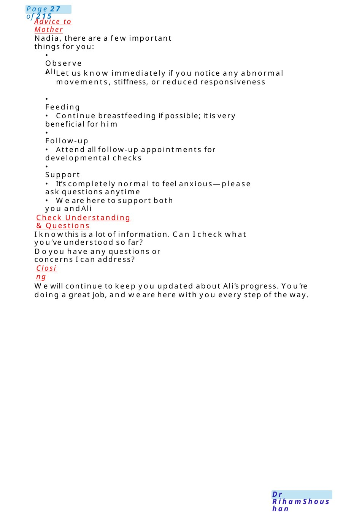

Neonatal Stroke
Introduction & Rapport: Hello Nadia, I’m Dr. [Your Name], one of the paediatric doctors looking after Ali. First of all, congratulations on your new baby. I understand this has been a stressful few days for you, and I’d like to take some time to explain clearly what’s happening with Ali and answer all your questions. Ali had a difficult start just after birth. His Apgar score was low at 1 minute, which means he needed some help to start breathing properly. The good news is that he responded very well to resuscitation, and his condition improved quickly by 5 minutes.
Scenario Summary
Introduction & Rapport: Hello Nadia, I’m Dr. [Your Name], one of the paediatric doctors looking after Ali. First of all, congratulations on your new baby. I understand this has been a stressful few days for you, and I’d like to take some time to explain clearly what’s happening with Ali and answer all your questions. Ali had a difficult start just after birth. His Apgar score was low at 1 minute, which means he needed some help to start breathing properly. The good news is that he responded very well to resuscitation, and his condition improved quickly by 5 minutes.
Full Original Scenario

Neonatal Stroke
Setting: Neonatal unit
Mother: Nadia
Baby: Ali, 3 days old
Introduction & Rapport: Hello Nadia, I’m Dr. [Your Name], one of the paediatric doctors looking after Ali. First of all, congratulations on your new baby. I understand this has been a stressful few days for you, and I’d like to take some time to explain clearly what’s happening with Ali and answer all your questions.
Explaining the Situation
Ali had a difficult start just after birth. His Apgar score was low at 1 minute, which means he needed some help to start breathing properly. The good news is that he responded very well to resuscitation, and his condition improved quickly by 5 minutes.
Today, you mayhave noticed someunusual movements on the right side of his body. These are what we call focal seizures (fits). In newborns, seizures can sometimes happen when the brain has been under stress.
We performed several tests:
- Blood tests and cultures: These are normal, which means there is no sign of infection.
- MRI scan of the brain: This showed a small area of reduced blood flow (ischemia) and irritation in the left side of the brain. This explains whythe movements were on the right side of his body (because each side of the brain controls the opposite side of the body).

Reassurance
I understand this sounds worrying, but I want to reassure you:
- Ali is currently stable
- The seizures have stopped after treatment
- Wehave identified the likely cause early, which helps guide management
Management Plan
Here is what we are doing for Ali:
1. Medication
- Hehas been given phenobarbital, which is a medication to control seizures.
- Wewill continue to monitor himclosely to see if he needs further doses or ongoing treatment.
2. Monitoring
- Continuous observation for any further seizures
- Monitoring feeding, breathing, and general activity
3. Supportive Care
- Ensuring good oxygen levels, temperature, and nutrition
- Supporting breastfeeding as muchas possible
4. Follow-up Imaging &Assessment
- Wemay repeat imaging or perform additional tests if needed
- Regular neurological assessments to monitor his development
5. Multidisciplinary Team
- Involvement of neonatal specialists and possibly a paediatric neurologist
- Developmental follow-up after discharge
Prognosis (Balanced Explanation)
At this stage, it is difficult to predict long-term outcomes with certainty. Many babies with early treatment do well, but some mayhave:
- Risk of developmental delay
- Risk of future seizures
This is whyclose follow-up is very important, so wecan support Ali early if needed.

Advice to Mother
Nadia, there are a few important things for you:
- Observe Ali
- Let us know immediately if you notice any abnormal movements, stiffness, or reduced responsiveness
- Feeding
- Continue breastfeeding if possible; it is very beneficial for him
- Follow-up
- Attend all follow-up appointments for developmental checks
- Support
- It’s completely normal to feel anxious—please ask questions anytime
- We are here to support both you and Ali
Check Understanding & Questions
I knowthis is a lot of information. Can I check what you’ve understood so far?
Doyou have any questions or concerns I can address?
Closing
Wewill continue to keep you updated about Ali’s progress. You’re doing a great job, and we are here with you every step of the way.

PDA&CCHD
Examscenarios: An8 hour old baby found blue on PNWcongenital cyanotic heart disease, now ventilated, on prostin and waiting to transfer to tertiary center. Task: Explain to momwhat congenital cyanotic heart disease is and its management(also update her onthe baby's current clinical condition).
EXPLANATION:Describe the drawing, our heart consists of 4 chambers ,2 upper receiving &2 lower pumping &2main blood tubes, one from the right side carry blue blood low in o2 to the lungs called pulmonary artery &one from the left side carry pink blood rich in o2 to the other body parts called aorta (if neonate, draw PDA&explain while the baby in the wombthere was connection <> the 2 blood tubes which mix the blood &normally it closes within 48 h after birth
CCHD: In ....condition because the duct start to close the symptoms appear &there is much blue blood in his body
PDA: in .... condition this duct still open, so more blood goes to the lung making it wet &stiff, because he was born early.
TTTCCHD:wealready started PGS(talk about its SE: seizure, apnea, hypotension, fever, flushing, tachycardia or bradycardia) &we will be ready for anydrawbacks if happened by......, urgent transfer to tertiary center, the consultant will be with him and the medicine will be running
PDA:Westarted BRUFEN(talk about its benefits &precautions: monitor pee amount, platelet count, if any tummyproblems or bleeding) &he mayneed surgery acc to the advice from heart doctor.